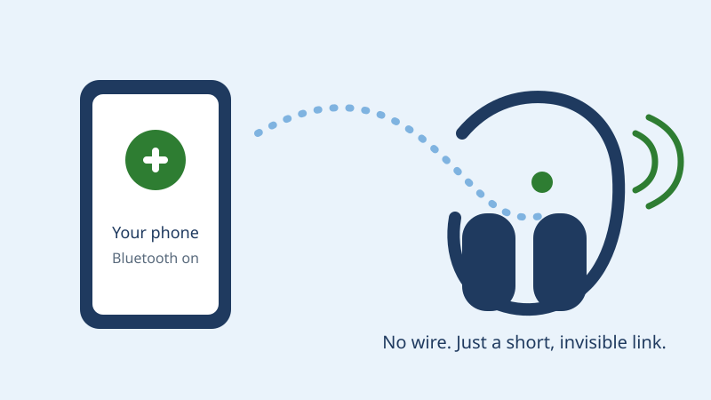

How to Connect Bluetooth Headphones to Your Samsung Galaxy
Roshan is 71 years old. On his birthday, his granddaughter Mehak gave him a small gift: a pair of wireless headphones, with no wire at all. "Grandfather," she said, "now you can listen to your naats and the radio without disturbing anyone."
Roshan smiled and thanked her. Then he looked at the headphones, and then at his phone, and he thought: how do these two things talk to each other, when there is no wire between them?
This guide shows you how to connect them, step by step. It takes about five minutes, and you only need to do the full setup once. After that, the phone remembers the headphones, and they connect themselves whenever you switch them on.

What Bluetooth is, in plain words
Bluetooth is a short, invisible connection between two things that are close together — your phone and your headphones, your phone and a speaker, or your phone and a car. Think of it as an invisible wire, about as long as a room. It does not need the internet, and it does not need Wi-Fi. It only needs the two things to be near each other.
The first time you connect the headphones, you have to introduce them to the phone. That first meeting is called "pairing". The headphones say, "Here I am, I am ready to connect." The phone says, "I see you. Let us connect." After that, the phone remembers the headphones, and the next time you switch the headphones on, they connect by themselves, without any steps.
One thing to know: the headphones can usually only talk to one thing at a time. If the headphones are already connected to your grandson's tablet, they will not connect to your phone until you disconnect them from the tablet. That is normal.
Before you start — three quick checks
Do these three things before you begin. They take two minutes, and they stop most problems before they start.
- Charge the headphones. Put the headphones in their case, or plug in their charging cable, and wait until the light says they are charged. Headphones with an empty battery will not pair at all, and they will not even appear in the list. If you are not sure, charge them for thirty minutes first.
- Keep the phone and the headphones close together. Put the headphones on the table, next to the phone, about an arm's length away. Bluetooth works over a short distance, and pairing works best when the two things are close. You can walk away later, once they are connected, but for the first meeting, keep them close.
- Find the button on the headphones. Every pair of wireless headphones has a button, or a small touch area, that switches them on and puts them into pairing mode. On some, it is a round button on one earpiece. On others, you hold the power button down for a few seconds. On headphones that come in a case, opening the case and holding the button on the case can do it. Look at the little booklet that came in the box, or look for a button with a power symbol on it. You will need this button in the next section.
Now you are ready. There are two ways to connect. Method 1 is the quickest, and most people use it. Method 2 does the same thing from Settings. Try Method 1 first.
Method 1: Connect from Quick Settings
Quick Settings is the panel of round buttons you see when you swipe down from the top of the screen. One of those buttons is Bluetooth. Here are the steps.
- Switch the headphones on and put them into pairing mode. Press and hold the button on the headphones until you see a light blinking, or you hear a voice say something like "pairing" or "ready to pair". On many headphones, the light blinks blue, or blue and red, one after the other. On some, the light flashes quickly. If the light is steady and not blinking, the headphones are probably switched on but not in pairing mode — hold the button a little longer, until the blinking starts. Read the section "How to know the headphones are ready to pair" below if you are not sure.
- Swipe down from the top of your phone screen with two fingers. A panel of round buttons will appear. This is the Quick Settings panel.
- Look for the button that says "Bluetooth". It has a small symbol that looks like a sideways B, made of two triangles. If you do not see it, swipe the panel to the left, or tap the small pencil icon to look for it, or use Method 2 instead.
- Tap the Bluetooth button once, to switch Bluetooth on. The button should light up, or change colour, to show it is on. If it is already lit up, Bluetooth is already on — leave it as it is.
- Now press and hold the same Bluetooth button for two seconds. Do not just tap it — press it and keep your finger on it. A new screen should open, called "Bluetooth", with a list on it.
- Look under "Available devices". The phone will search for a few seconds. The name of your headphones should appear in the list — something like the brand name, or a model number, for example "Galaxy Buds", "SoundBuds", or a name with numbers in it. If you see a name that looks like your headphones, tap it.
- Tap "Pair" if the phone asks. A small box may pop up and ask "Pair with this device?" Tap "Pair" or "OK". You do not need a code. Most headphones connect without any code at all. If it does ask for a code, try 0000 (four zeros) — that is the usual code for simple headphones — and read the little booklet if that does not work.
- Wait for the word "Connected". After a few seconds, the headphones should move from "Available devices" to "Paired devices", and the words beside the name should say "Connected". You may also hear a small sound in the headphones, or a voice saying "connected". That is it. Play a song or a video, and the sound should come through the headphones.
If the name of your headphones never appears in the list, do not worry. Read the section "If the headphones do not appear" below, and work through it slowly. Most of the time, the headphones were simply not in pairing mode yet.
Method 2: Connect from Settings
This method does exactly the same thing, but from the Settings app instead of the Quick Settings panel. Use it if Method 1 did not work, or if you prefer Settings.
- Switch the headphones on and put them into pairing mode. Hold the button until the light blinks, or you hear "pairing", exactly as in Method 1, step 1.
- Open Settings. It is the app with the gear symbol on it.
- Use the search box at the top of Settings and type "Bluetooth". Tap the result that says "Bluetooth". This is the easiest way to find it, because the setting lives in a different place on different phones.
- Make sure the switch at the top is on. If the switch is off, tap it once to turn it on. The phone will start searching for nearby devices.
- Look under "Available devices" and tap the name of your headphones. Wait a few seconds if the list is empty — the phone needs time to search.
- Tap "Pair" if the phone asks, and wait for "Connected". The headphones should move to "Paired devices", and the words beside the name should say "Connected". Play a song to check the sound comes through the headphones.
How to know the headphones are ready to pair
This is the step that confuses most people, so it is worth a careful look. The headphones must be in pairing mode, or the phone cannot see them at all. Here is how to tell.
First, look at the light. When headphones are in pairing mode, a small light on them usually blinks — on and off, quickly. On many pairs it blinks blue, or blue and red, one after the other. A steady light usually means the headphones are switched on but are not in pairing mode. A light that is not on at all usually means the battery is empty, or the headphones are switched off.
Second, listen. Many headphones speak. When they enter pairing mode, you may hear a voice say "pairing" or "ready to pair". If you hear "connected" instead, the headphones are already connected to something else — probably another phone or tablet in the house. Read the section "If the headphones do not appear" below for that case.
Third, check the booklet. The little booklet in the box usually has one page that says how to pair, with pictures. It will tell you which button to hold, and for how long — often three to five seconds. If you threw the booklet away, search on the internet for the brand and model name plus the words "pairing mode". A family member can help you with that search.
If the headphones do not appear
Work through this list slowly, one item at a time. Check the list again after each item, because the problem is often fixed by the first or second one.
- Check the battery. Put the headphones back in their case, or on charge, for thirty minutes, then try again. An empty battery is the most common reason headphones do not appear.
- Put them into pairing mode again. Hold the button until the light blinks quickly, or you hear "pairing". Many people hold the button too briefly, and the headphones switch on but never enter pairing mode. Hold it a little longer this time.
- Move the headphones closer to the phone. Put them right next to the phone, on the same table. Walls, pockets, and bags can weaken the signal. A distance of more than a few steps can be too far during pairing.
- Check if they are connected to something else. If the headphones say "connected" when you switch them on, they are talking to another device — a tablet, a laptop, or another phone in the house. Switch Bluetooth off on that other device, or switch that device off, then put the headphones into pairing mode again.
- Forget them and try again. If the headphones appear in the list but the connection fails, tap the small gear or settings icon beside their name, then tap "Unpair" or "Forget". Then put the headphones into pairing mode again, and tap their name in the list to pair them fresh.
- Restart both things. Switch the headphones off, wait ten seconds, and switch them on again. Then restart your phone — hold the side button, tap "Restart", and wait for the phone to come back. Then try pairing again. Restarting fixes many small problems. Read How to Turn Your Galaxy On, Off and Restart It if you are not sure how to restart.
If none of this works, the headphones themselves may be faulty, or they may not be compatible with your phone. Try them with a family member's phone. If they pair with that phone, the problem is in your phone's settings. If they pair with nothing at all, take them back to the shop with the receipt, and ask for help or a replacement.
Switching sound between the phone and the headphones
Once the headphones are connected, all the sound — songs, videos, calls — goes through them. But sometimes you want the sound to come out of the phone speaker instead, for example to show a video to someone sitting next to you. You do not need to disconnect the headphones to do that.
While a song or a video is playing, look at the top of the screen, or open the Quick Settings panel by swiping down with two fingers. Look for a button or a line that says something like "Media output", or a small speaker symbol, or the name of your headphones. Tap it. A small list should appear, with "This phone" or "Phone speaker" at the top, and your headphones below it. Tap "This phone" to hear the sound from the phone speaker. Tap the headphones' name to send the sound back to the headphones.
Phone calls work the same way. When a call comes in while the headphones are connected, the caller's voice comes through the headphones, and the headphones' microphone picks up your voice. If you want the call on the phone speaker instead, tap the speaker button on the call screen.
Disconnecting is not the same as unpairing
These two words sound alike, and people mix them up. They do very different things, so it is worth knowing the difference.
Disconnecting is like saying goodbye for now. The phone stops talking to the headphones, and the sound goes back to the phone speaker, but the phone still remembers the headphones. The next time you switch the headphones on, they connect again by themselves. To disconnect, open the Bluetooth screen in Settings, tap the gear or settings icon beside the headphones' name, and tap "Disconnect". Or simply switch the headphones off, or put them back in their case.
Unpairing — also called "Forgetting" — is like erasing the introduction. The phone forgets the headphones completely. The next time you switch the headphones on, they will not connect by themselves. You will have to pair them again, from the beginning. To unpair, open the Bluetooth screen, tap the gear icon beside the headphones' name, and tap "Unpair" or "Forget".
When should you use each one? Disconnect when you are done listening for today, or when you want the sound on the phone speaker. Unpair only when something is wrong — for example, the headphones connect but no sound comes through — or when you are giving the headphones to someone else. If you unpair by mistake, do not worry. Just put the headphones into pairing mode and pair them again. Nothing is lost.
Protect your hearing — start low
Headphones sit right next to your ears, so the volume matters more than with a speaker across the room. A volume that sounds fine for one minute can hurt your ears after an hour. Here is how to stay safe.
Always start low. When you put the headphones on, set the volume to about half, or less, and then turn it up slowly until you can hear clearly. Do not start at full volume — a sudden loud sound is the worst thing for your ears. Your phone may show a warning when you turn the volume up high, with words like "Listening at high volume for a long time may damage your hearing". That warning is real. Take it seriously, and turn the volume back down a little.
Take breaks. If you listen for a long time, take the headphones off every hour or so, and rest your ears for a few minutes. And never wear headphones while crossing a road, or while walking near traffic. You need to hear cars, bicycles, and people calling out to you.
Practise with Roshan
Let us practise with Roshan. He sits at the kitchen table with Mehak. The headphones are charged, and they are on the table, next to his phone. Mehak holds the button on the headphones until the light blinks blue, and a small voice says "pairing". Roshan swipes down from the top of his phone with two fingers, taps the Bluetooth button to switch it on, then presses and holds the same button. The Bluetooth screen opens. Under "Available devices", a name appears. Roshan taps it, taps "Pair", and waits. A few seconds later, the words beside the name say "Connected". Mehak plays a naat. The sound comes through the headphones, clear and soft. Now try it yourself, with a family member sitting next to you. Charge the headphones, hold the button until the light blinks, and follow Method 1, slowly. It takes five minutes. The first time is the only hard time — after that, the headphones connect by themselves.
Common mistakes
- Trying to pair headphones with an empty battery. Headphones that are out of charge will not appear in the list at all. Charge them first, for at least thirty minutes.
- Not holding the button long enough. A quick tap only switches the headphones on. Hold the button until the light blinks quickly, or you hear "pairing". That is the step most people miss.
- Forgetting the headphones are connected to another device. If the headphones say "connected" when you switch them on, they are talking to a tablet, a laptop, or another phone. Switch Bluetooth off on that device first.
- Standing too far away while pairing. Bluetooth is short-range. Put the headphones right next to the phone for the first meeting. You can move away after they are connected.
- Mixing up disconnect and unpair. Disconnecting is temporary — the phone remembers the headphones. Unpairing erases the memory, and you must pair again from the start. Use "Disconnect" for everyday use.
- Turning the volume to full at once. A sudden loud sound can hurt your ears. Start at half volume or less, and turn it up slowly.
- Giving up after one failed try. Pairing fails often on the first try, for small reasons — the battery, the distance, the other device. Work through the list in "If the headphones do not appear", one item at a time, and try again.
Frequently asked questions
Do I need the internet or Wi-Fi to use Bluetooth headphones?
No. Bluetooth is its own connection, between the phone and the headphones. It works without the internet and without Wi-Fi. You only need the internet if you want to listen to something online, like a video or a radio station. The connection itself needs nothing else. Read How to Connect Your Galaxy to Wi-Fi if you want to understand Wi-Fi separately.
Can I connect two pairs of headphones to one phone at the same time?
On most Galaxy phones, no — the phone plays sound through one pair at a time. Some newer Galaxy phones have a feature called "Dual audio" in the Media output list, which lets two Bluetooth devices play at once, but it does not exist on every phone, and the sound can be a little out of step between the two pairs. For everyday listening, use one pair at a time.
Why does the sound cut out or crackle?
Usually because the phone and the headphones are too far apart, or something is between them — a wall, a bag, or your body. Move the phone closer, and keep it in the same room. A low battery in the headphones can also cause crackling, so charge them. If it keeps happening in the same place, something nearby may be interfering — try a different room.
Can I take phone calls with Bluetooth headphones?
Yes. When a call comes in, the caller's voice comes through the headphones, and you speak into the small microphone built into the headphones. Tap the button on the headphones once to answer, and tap it again to end the call. If the other person cannot hear you well, check that the headphones are charged, and that you are not too far from the phone.
Does Bluetooth drain the phone battery?
A little, yes — the phone uses power to keep the connection alive. But it is a small amount, much less than the screen or a video. If your battery runs out fast, the cause is usually something else, like screen brightness or an app running in the background. Read How to Make Your Phone Battery Last Longer for the bigger savings.
If the words on your screen look different
Menu words may look a little different on your phone. That is normal. Samsung makes many Galaxy models — A-series and S-series — and they do not all show the exact same words. Your phone company, called a carrier, can also change some words, and so can your country or region. And your One UI version matters. In November 2026, some phones use One UI 8, some use One UI 8.5, and some use One UI 9. That is why this guide tells you to search in Settings for "Bluetooth", and to look for "Available devices", "Paired devices", "Pair", "Disconnect", or "Unpair", instead of one fixed set of words.
If you cannot find the Bluetooth screen at all, open Settings, use the search box at the top, and type "Bluetooth". If it is still not there, ask a family member to check it with you, because the name may be different on your model.